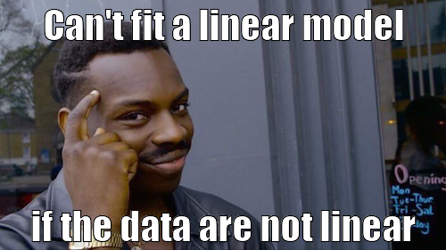
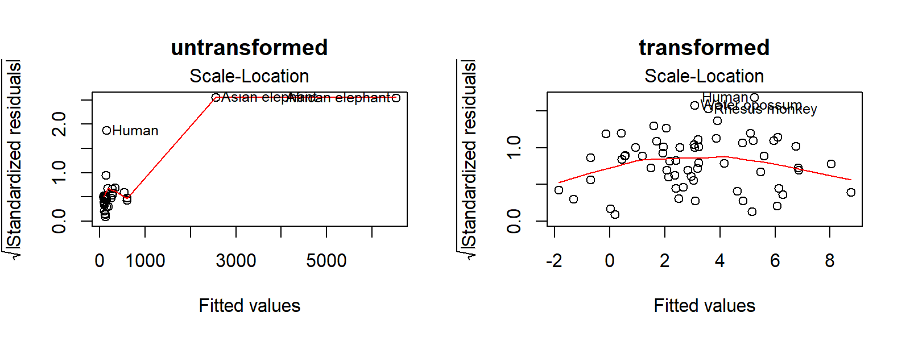

Overall lecture aims
- Identify the structure of general linear models
- Describe how linear models are parametrized
- Understand how to use linear models
- Understand how to interpret and evaluate linear models
By the end of this lecture you should:
- Know how the coefficient of determination is calculated
- Understand how to evaluate the fit of a model based on the coefficient of determination
- Understand the assumptions of linear regression
- Be able to evaluate the appropriateness of a linear model to data based on residual plots
By now you should be comfortable with building and interpreting basic linear models in R
but how do we know whether our model is a “good” one?
We need to evaluate our model. There are a few things we should consider:
- How much variation in the data is explained by the model?
- Are linear models appropriate for our hypotheses?
What does a linear model tell us?
- What will a new value of Y be, given a new value of X?
- Does the population slope \(\beta_1\) differ to 0?
- How much variation in Y can be explained its linear relationship with X?
- Coefficient of determination (\(R^2\))
- Partitioning variance (F ratio)
How much variation in Y can be explained its linear relationship with X?
\[ \frac{Var_{\text{explained by the line}}}{Var_{\text{not explained by the line}}} = Ratio\]
We need to know the total amount of variation and all possible sources of variation (like the F-ratio & ANOVA)
What is or isn’t explained by the line
Isn’t: Sum of Squares of the Error (SSY)
The bit not explained by the null (total variation in the data). Remember, the null is \(\bar{y}\) = the mean of Y.
\[SSY = y_i - \bar{y}\]
Isn’t: Sum of Squares of the Residual (SSE)
The bit not explained by the line
\[SSE = y_i - \hat{y_i}\]
Isn’t: Sum of Squares of the Regression (SSR)
How well the line estimates the mean of Y
\[SSR = \hat{y_i} - \bar{y}\]
Accounting for all variation in the data: SSY = SSE + SSR
So which bits do we use?
\[ \frac{Var_{\text{explained by the line}}}{Var_{\text{not explained by the line}}} = Ratio\]
Interpreting ratios:
Ratio > 1 = Line explains more than residual
Ratio ≤ 1 = Line explains very little (null hypothesis)
We want to know how steep the line is relative to how much the line gets wrong:
\[ \frac{SSR}{SSE} = Ratio\]
Can we use this ratio to evaluate our model?
Turns out, SSE depends on the total variation of Y, meaning it’s not that informative. We need to standardise it relative to the total amount of variation. How can we do that?
SSY, the Sum of Squares of the Error. The bit not explained by the null
Thus, “fit” is given by \(\frac{SSR}{SSY} = R^2\)
Coefficient of determination \(R^2\)
This is the proportion of variation that your model (your line) explains
1 = no deviance from line (good)
0 = strong deviance from line (not good)
It is related to correlation coefficients. Basically, \(R^2 = r^2\)
R will calculate \(R^2\) for you. Going back the tree height and girth example, the \(R^2\) is 0.2696518.
Call:
lm(formula = Height ~ Girth, data = trees)
Residuals:
Min 1Q Median 3Q Max
-12.5816 -2.7686 0.3163 2.4728 9.9456
Coefficients:
Estimate Std. Error t value Pr(>|t|)
(Intercept) 62.0313 4.3833 14.152 1.49e-14 ***
Girth 1.0544 0.3222 3.272 0.00276 **
---
Signif. codes: 0 '***' 0.001 '**' 0.01 '*' 0.05 '.' 0.1 ' ' 1
Residual standard error: 5.538 on 29 degrees of freedom
Multiple R-squared: 0.2697, Adjusted R-squared: 0.2445
F-statistic: 10.71 on 1 and 29 DF, p-value: 0.002758
But there are other things to check that are more important!
We make assumptions of the error structure in linear regression
Remember:
\[Y_i = \beta_0 + \beta_1 \times X_i + \varepsilon_i\]
- Does not change our estimates of \(\beta_0\) or \(\beta_1\)
- Affects our confidence intervals of the estimate and thus hypothesis testing
- Because \(\varepsilon_i\) is random, our assumptions also apply to the response variable \(y_i\)

Assumptions of linear regression
In addition to this main condition, there are 4 assumptions of linear regression:
- Normality
- Homogeneity of Variance
- Independence
- Fixed X
ALWAYS check these assumptions every time you fit a model. No exceptions!
Mammal brain and body size
Let’s look at the relationship between brain mass and body mass for different mammals. The dataset is called mammals in the MASS package.

1. Normality
Population Y values and error terms (\(\varepsilon_i\)) are normally distributed for each level of the predictor variable (\(x_i\))
The distribution of the response variable, Y, should be normally distributed (not skewed). We can graphically check this using a histogram of brain size.
Quantile-Quantile plots
- We can also visualise the spread of data with a quantile-quantile plot.
- The linear line is the expected relationship following a normal distribution. Do our points follow the line?
- What does it mean when the points don’t follow the line?

The residuals of the model should be also normally distributed
What happens when the data is not normal?
- collect more data, increase sample size for each level of \(x\)
- use a non-parametric test
- e.g. Spearman’s Rank Correlation
- ignore it (with good reason). Linear regressions are robust to skewness
- Fit another statistical model with more appropriate error structures
- Transform the data
2. Homogeneity of Variance
Population Y values and error terms (\(\varepsilon_i\)) have the same variance for each level of the predictor variable (\(x_i\))
- Related to the assumptions of Normality but more important!
- Should expect a normal distribution of standardised residuals
- Expect no relationship between standardised (or non-standardised) residuals and fitted values of model
Causes:
- small sample size
- outliers
- non-normally distributed variables
Deal with it like as normality
Are there trends in the residual vs fitted values?

3. Independence
Population Y values and error terms (\(\varepsilon_i\)) are independent
- They do not influence each other (not autocorrelated)
- Often because of inappropriate experimental design
- time series
- pseudo-replication
- repeated measurements
- Increases Type I error
Dealing with independence
Best thing is to choose a different model
4. Fixed X
The predictor variable (\(x_i\)) is fixed. i.e. a known constant
Called Type I model or fixed effects model
- Often broken in biological stats
- Predictor variables can be random
- Called Type II (random effects model)
- Hypothesis testing of Type I applies to Type II
Other regression diagnostics
- How well does the model fit the data?
- Coefficient of determination \(R^2\)
- Is a simple linear regression appropriate?
- e.g. polynomial or curvilinear model
- Are there effects of outliers in the model?
Outliers, leverage and Influence
- Outliers can be checked before applying a model
- Sometimes influential data points are not outliers
- Leverage = how much x influences y
- Influence = how much x influences the slope of the line (Cook’s Distance)
Outliers in the mammal dataset
Putting it all together
These assumptions can be checked by looking at the residual plots. R shows residual plots using the function plot(lm()).

Let’s evaluate the residual plot, starting from the top left:
- Are the residuals vs fitted values equal (i.e. a straight line)? If there are humps or valleys, the model may not be appropriate for the data.
- Are the standardised residuals normally distributed? Linear models assume that residuals are normally distributed. If not, your model is inappropriate for your data or your data is skewed in some way.
- Is there a pattern to your \(\sqrt{\mbox{Standardised residuals}}\)? Linear models assume equal variance so there should be no pattern in your residuals.
- Are there any outlier data points that have strong leverage in the model? E.g. potential outliers or influential data points.
Explaining as much about the response as possibe
When fitting model we want to know:
\[ Ratio_N = \frac{Var_{among}}{Var_{within}}\]
\(N\) = sample size
Var = variation
Last lecture we calculated Sum of Squares (SS) and coefficients of determination (\(R^2\))
But SS is influenced by sample size…
Calculating variance: Moving beyond Sum of Squares (SS)
- Take a mean value of variation (Mean Squares, MS), like arithmetic mean, but with what denominator?
- degrees of freedom as denominator
\[ MS = \frac{SS}{df}\]
What are the degrees of freedom?
- For the regression line: 1 degree of freedom
- For the error? Well we know two parameters \(Y = ax + b\) so \(df = n-2\)
- So we divide SSR by 1 df (i.e. it stays the same) and we divide SSE by n-2
- What is the total degrees of freedom in a simple linear model?
Partitioning variances with ANOVA
- MS are estimates of variance in the response explained or not by the predictors corrected for sample size
- We can now compare variation among and within groups
Ratio of two sample variances (F ratio)
\[ Ratio = \frac{SSR}{SSE}\]
becomes \[ F = \frac{MSR}{MSE}\]
This is the ratio of two sample variance (F ratio)
Hypothesis testing with F ratios
Use F distributions to test probability that the value is due to chance at a given significance level - like the t distribution.
LS0tDQp0aXRsZTogIlN0YXRpc3RpY2FsIG1vZGVsbGluZyINCmF1dGhvcjoNCi0gRHIgSmFjaW50YSBLb25nDQotIFNjaG9vbCBvZiBOYXR1cmFsIFNjaWVuY2VzDQotIGtvbmdqQHRjZC5pZQ0Kb3V0cHV0Og0KICBodG1sX2RvY3VtZW50Og0KICAgIGNvZGVfZG93bmxvYWQ6IHllcw0KICAgIGRmX3ByaW50OiBwYWdlZA0KICAgIHRoZW1lOiBzYW5kc3RvbmUNCiAgICB0b2M6IHllcw0Kc3VidGl0bGU6ICdMZWN0dXJlIDM6IEV2YWx1YXRpbmcgbGluZWFyIG1vZGVscycNCmVkaXRvcl9vcHRpb25zOg0KICBjaHVua19vdXRwdXRfdHlwZTogY29uc29sZQ0KLS0tDQoNCmBgYHtyIHNldHVwLCBpbmNsdWRlPUZBTFNFfQ0KbGlicmFyeShrbml0cikNCm9wdHNfY2h1bmskc2V0KGVjaG8gPSBGLCB3YXJuaW5nID0gRkFMU0UsIG1lc3NhZ2UgPSBGQUxTRSwgY29tbWVudCA9IE5BLCBmaWcuaGVpZ2h0ID0gMywgZmlnLndpZHRoID0gMywgZHBpID0gMTAwLCBmaWcuYWxpZ24gPSAiY2VudGVyIiwgZmlnLnNob3cgPSAiaG9sZCIpDQpsaWJyYXJ5KHRpZHl2ZXJzZSkNCmxpYnJhcnkoY293cGxvdCkNCnRoZW1lX3NldCh0aGVtZV9jbGFzc2ljKCkpDQpsaWJyYXJ5KE1BU1MpDQpvcHRpb25zKGdncGxvdDIuY29udGludW91cy5jb2xvdXI9InZpcmlkaXMiKQ0Kc2NhbGVfY29sb3VyX2Rpc2NyZXRlIDwtIGZ1bmN0aW9uKC4uLikgICBzY2FsZV9jb2xvdXJfdmlyaWRpc19kKCkNCmBgYA0KKioqDQoNCiMgT3ZlcmFsbCBsZWN0dXJlIGFpbXMNCg0KKiBJZGVudGlmeSB0aGUgc3RydWN0dXJlIG9mIGdlbmVyYWwgbGluZWFyIG1vZGVscw0KKiBEZXNjcmliZSBob3cgbGluZWFyIG1vZGVscyBhcmUgcGFyYW1ldHJpemVkDQoqIFVuZGVyc3RhbmQgaG93IHRvIHVzZSBsaW5lYXIgbW9kZWxzDQoqIFVuZGVyc3RhbmQgaG93IHRvIGludGVycHJldCBhbmQgZXZhbHVhdGUgbGluZWFyIG1vZGVscw0KDQojIyBPdGhlciByZXNvdXJjZXMNCiANCiogU2VlaW5nIFRoZW9yeS4gQ2hhcHRlciA2LiBodHRwczovL3NlZWluZy10aGVvcnkuYnJvd24uZWR1L3JlZ3Jlc3Npb24tYW5hbHlzaXMvaW5kZXguaHRtbA0KKiBTdGF0aXN0aWNzOiBhbiBpbnRyb2R1Y3Rpb24gdXNpbmcgUi4gTWljaGFlbCBKLiBDcmF3bGV5LiBXaWxleSBQcmVzcy4gQ2hhcHRlcnMgNyAtIDExLg0KKiBFeHBlcmltZW50YWwgRGVzaWduIGFuZCBEYXRhIEFuYWx5c2lzIGZvciBCaW9sb2dpc3RzLiBHZXJyeSBQLiBRdWlubiAmIE1pY2hhZWwgSi4gS2VvdWdoLiBDYW1icmlkZ2UgUHJlc3MuIENoYXB0ZXJzIDUsIDYsIDgsIDEyLg0KKiBodHRwczovL2xlYXJuaW5nc3RhdGlzdGljc3dpdGhyLmNvbS9ib29rL2luZGV4Lmh0bWwNCg0KIyMgQnkgdGhlIGVuZCBvZiB0aGlzIGxlY3R1cmUgeW91IHNob3VsZDoNCiANCiogS25vdyBob3cgdGhlIGNvZWZmaWNpZW50IG9mIGRldGVybWluYXRpb24gaXMgY2FsY3VsYXRlZA0KKiBVbmRlcnN0YW5kIGhvdyB0byBldmFsdWF0ZSB0aGUgZml0IG9mIGEgbW9kZWwgYmFzZWQgb24gdGhlIGNvZWZmaWNpZW50IG9mIGRldGVybWluYXRpb24NCiogVW5kZXJzdGFuZCB0aGUgYXNzdW1wdGlvbnMgb2YgbGluZWFyIHJlZ3Jlc3Npb24NCiogQmUgYWJsZSB0byBldmFsdWF0ZSB0aGUgYXBwcm9wcmlhdGVuZXNzIG9mIGEgbGluZWFyIG1vZGVsIHRvIGRhdGEgYmFzZWQgb24gcmVzaWR1YWwgcGxvdHMNCg0KKioqDQoNCiMgQnkgbm93IHlvdSBzaG91bGQgYmUgY29tZm9ydGFibGUgd2l0aCBidWlsZGluZyBhbmQgaW50ZXJwcmV0aW5nIGJhc2ljIGxpbmVhciBtb2RlbHMgaW4gUiANCg0KPiBidXQgaG93IGRvIHdlIGtub3cgd2hldGhlciBvdXIgbW9kZWwgaXMgYSAiZ29vZCIgb25lPw0KDQpXZSBuZWVkIHRvIGV2YWx1YXRlIG91ciBtb2RlbC4gVGhlcmUgYXJlIGEgZmV3IHRoaW5ncyB3ZSBzaG91bGQgY29uc2lkZXI6DQoNCjEuIEhvdyBtdWNoIHZhcmlhdGlvbiBpbiB0aGUgZGF0YSBpcyBleHBsYWluZWQgYnkgdGhlIG1vZGVsPw0KMi4gQXJlIGxpbmVhciBtb2RlbHMgYXBwcm9wcmlhdGUgZm9yIG91ciBoeXBvdGhlc2VzPw0KDQoqKioNCg0KIyBXaGF0IGRvZXMgYSBsaW5lYXIgbW9kZWwgdGVsbCB1cz8NCg0KMS4gV2hhdCB3aWxsIGEgbmV3IHZhbHVlIG9mIFkgYmUsIGdpdmVuIGEgbmV3IHZhbHVlIG9mIFg/DQoyLiBEb2VzIHRoZSBwb3B1bGF0aW9uIHNsb3BlICRcYmV0YV8xJCBkaWZmZXIgdG8gMD8NCjMuICoqSG93IG11Y2ggdmFyaWF0aW9uIGluIFkgY2FuIGJlIGV4cGxhaW5lZCBpdHMgbGluZWFyIHJlbGF0aW9uc2hpcCB3aXRoIFg/KioNCiAgKiBDb2VmZmljaWVudCBvZiBkZXRlcm1pbmF0aW9uICgkUl4yJCkNCiAgKiBQYXJ0aXRpb25pbmcgdmFyaWFuY2UgKEYgcmF0aW8pDQogIA0KIyBIb3cgbXVjaCB2YXJpYXRpb24gaW4gWSBjYW4gYmUgZXhwbGFpbmVkIGl0cyBsaW5lYXIgcmVsYXRpb25zaGlwIHdpdGggWD8NCg0KJCQgXGZyYWN7VmFyX3tcdGV4dHtleHBsYWluZWQgYnkgdGhlIGxpbmV9fX17VmFyX3tcdGV4dHtub3QgZXhwbGFpbmVkIGJ5IHRoZSBsaW5lfX19ID0gUmF0aW8kJA0KDQo+IFdlIG5lZWQgdG8ga25vdyB0aGUgdG90YWwgYW1vdW50IG9mIHZhcmlhdGlvbiBhbmQgYWxsIHBvc3NpYmxlIHNvdXJjZXMgb2YgdmFyaWF0aW9uIChsaWtlIHRoZSBGLXJhdGlvICYgQU5PVkEpDQoNCiMjIFdoYXQgaXMgb3IgaXNuJ3QgZXhwbGFpbmVkIGJ5IHRoZSBsaW5lDQoNCiMjIyBJc24ndDogU3VtIG9mIFNxdWFyZXMgb2YgdGhlIEVycm9yIChTU1kpDQoNClRoZSBiaXQgbm90IGV4cGxhaW5lZCBieSB0aGUgbnVsbCAodG90YWwgdmFyaWF0aW9uIGluIHRoZSBkYXRhKS4gUmVtZW1iZXIsIHRoZSBudWxsIGlzICRcYmFye3l9JCA9IHRoZSBtZWFuIG9mIFkuDQoNCiQkU1NZID0geV9pIC0gXGJhcnt5fSQkDQoNCmBgYHtyIFNTWSwgZmlnLmNhcCA9ICJCbGFjayBsaW5lIGlzIHRoZSBtZWFuIG9mIFkiLCBmaWcuaGVpZ2h0ID0gNSwgZmlnLndpZHRoID0gNX0NCnBsb3QoSGVpZ2h0IH4gR2lydGgsIHRyZWVzKQ0KYWJsaW5lKG1lYW4odHJlZXMkSGVpZ2h0KSwwLCBsd2Q9MywgbHR5ID0gMikNCmZvcihpIGluIHNlcV9hbG9uZyh0cmVlcyRIZWlnaHQpKSB7DQoJICBzZWdtZW50cyh4MCA9IHRyZWVzJEdpcnRoW2ldLCB5MD0gdHJlZXMkSGVpZ2h0W2ldLCANCgkgICAgICAgICAgIHgxID0gdHJlZXMkR2lydGhbaV0sIHkxPW1lYW4odHJlZXMkSGVpZ2h0KSwgY29sID0gImJsdWUiKQ0KCX0NCmBgYA0KDQojIyMgSXNuJ3Q6IFN1bSBvZiBTcXVhcmVzIG9mIHRoZSBSZXNpZHVhbCAoU1NFKQ0KVGhlIGJpdCBub3QgZXhwbGFpbmVkIGJ5IHRoZSBsaW5lDQoNCiQkU1NFID0geV9pIC0gXGhhdHt5X2l9JCQNCg0KYGBge3IgU1NFLCBmaWcuY2FwID0gIlJlc2lkdWFscyAoYmx1ZSBsaW5lcykgYXJlIHRoZSBkaWZmZXJlbmNlIGJldHdlZW4gdGhlIGRhdGEgcG9pbnQgYW5kIHRoZSBwcmVkaWN0ZWQgbGluZSAoYmxhY2sgbGluZSkiLCBmaWcuaGVpZ2h0ID0gNSwgZmlnLndpZHRoID0gNX0NCnBsb3QoSGVpZ2h0IH4gR2lydGgsIHRyZWVzKQ0KdHJlZV9sbSA8LSBsbShIZWlnaHQgfiBHaXJ0aCwgdHJlZXMpDQphYmxpbmUodHJlZV9sbSwgbHdkPTMpDQpmb3IoaSBpbiBzZXFfYWxvbmcodHJlZXMkSGVpZ2h0KSkgew0KCSAgc2VnbWVudHMoeDAgPSB0cmVlcyRHaXJ0aFtpXSwgeTAgPSB0cmVlcyRIZWlnaHRbaV0sIA0KCSAgICAgICAgICAgeDEgPSB0cmVlcyRHaXJ0aFtpXSwgeTE9IGNvZWYodHJlZV9sbSlbMV0rY29lZih0cmVlX2xtKVsyXSp0cmVlcyRHaXJ0aFtpXSwgY29sID0gImJsdWUiKQ0KCX0NCmBgYA0KDQoNCiMjIyBJc24ndDogU3VtIG9mIFNxdWFyZXMgb2YgdGhlIFJlZ3Jlc3Npb24gKFNTUikNCkhvdyB3ZWxsIHRoZSBsaW5lIGVzdGltYXRlcyB0aGUgbWVhbiBvZiBZDQoNCiQkU1NSID0gXGhhdHt5X2l9IC0gXGJhcnt5fSQkDQoNCmBgYHtyIFNTUiwgZmlnLmNhcCA9ICJSZXNpZHVhbHMgKGJsdWUgbGluZXMpIGFyZSB0aGUgZGlmZmVyZW5jZSBiZXR3ZWVuIHRoZSBkYXRhIHBvaW50IGFuZCB0aGUgcHJlZGljdGVkIGxpbmUgKGJsYWNrIGxpbmUpIiwgZmlnLmhlaWdodCA9IDUsIGZpZy53aWR0aCA9IDV9DQpwbG90KEhlaWdodCB+IEdpcnRoLCB0cmVlcykNCmFibGluZSh0cmVlX2xtLCBsd2Q9MykNCmFibGluZShtZWFuKHRyZWVzJEhlaWdodCksMCwgbHdkPTMsIGx0eSA9IDIpDQpmb3IoaSBpbiBzZXFfYWxvbmcodHJlZXMkSGVpZ2h0KSkgew0KCSAgc2VnbWVudHMoeDAgPSB0cmVlcyRHaXJ0aFtpXSwgeTAgPSBtZWFuKHRyZWVzJEhlaWdodCksIA0KCSAgICAgICAgICAgeDEgPSB0cmVlcyRHaXJ0aFtpXSwgeTE9IGNvZWYodHJlZV9sbSlbMV0rY29lZih0cmVlX2xtKVsyXSp0cmVlcyRHaXJ0aFtpXSwgY29sID0gImJsdWUiKQ0KCX0NCmBgYA0KDQoNCj4gQWNjb3VudGluZyBmb3IgYWxsIHZhcmlhdGlvbiBpbiB0aGUgZGF0YToNCj4gU1NZID0gU1NFICsgU1NSDQoNCiMgU28gd2hpY2ggYml0cyBkbyB3ZSB1c2U/DQoNCiQkIFxmcmFje1Zhcl97XHRleHR7ZXhwbGFpbmVkIGJ5IHRoZSBsaW5lfX19e1Zhcl97XHRleHR7bm90IGV4cGxhaW5lZCBieSB0aGUgbGluZX19fSA9IFJhdGlvJCQNCg0KSW50ZXJwcmV0aW5nIHJhdGlvczogIA0KUmF0aW8gPiAxID0gTGluZSBleHBsYWlucyBtb3JlIHRoYW4gcmVzaWR1YWwgIA0KUmF0aW8g4omkIDEgPSBMaW5lIGV4cGxhaW5zIHZlcnkgbGl0dGxlIChudWxsIGh5cG90aGVzaXMpICANCg0KV2Ugd2FudCB0byBrbm93IGhvdyBzdGVlcCB0aGUgbGluZSBpcyByZWxhdGl2ZSB0byBob3cgbXVjaCB0aGUgbGluZSBnZXRzIHdyb25nOg0KDQokJCBcZnJhY3tTU1J9e1NTRX0gPSBSYXRpbyQkDQoNCioqQ2FuIHdlIHVzZSB0aGlzIHJhdGlvIHRvIGV2YWx1YXRlIG91ciBtb2RlbD8qKg0KDQpUdXJucyBvdXQsIFNTRSBkZXBlbmRzIG9uIHRoZSB0b3RhbCB2YXJpYXRpb24gb2YgWSwgbWVhbmluZyBpdCdzIG5vdCB0aGF0IGluZm9ybWF0aXZlLiAqV2UgbmVlZCB0byBzdGFuZGFyZGlzZSBpdCByZWxhdGl2ZSB0byB0aGUgdG90YWwgYW1vdW50IG9mIHZhcmlhdGlvbiouIEhvdyBjYW4gd2UgZG8gdGhhdD8NCg0KPiBTU1ksIHRoZSBTdW0gb2YgU3F1YXJlcyBvZiB0aGUgRXJyb3IuIFRoZSBiaXQgbm90IGV4cGxhaW5lZCBieSB0aGUgbnVsbA0KDQpUaHVzLCAiZml0IiBpcyBnaXZlbiBieSAkXGZyYWN7U1NSfXtTU1l9ID0gUl4yJA0KDQojIENvZWZmaWNpZW50IG9mIGRldGVybWluYXRpb24gJFJeMiQNCg0KPiBUaGlzIGlzIHRoZSBwcm9wb3J0aW9uIG9mIHZhcmlhdGlvbiB0aGF0IHlvdXIgbW9kZWwgKHlvdXIgbGluZSkgZXhwbGFpbnMNCg0KMSA9IG5vIGRldmlhbmNlIGZyb20gbGluZSAoZ29vZCkgIA0KMCA9IHN0cm9uZyBkZXZpYW5jZSBmcm9tIGxpbmUgKG5vdCBnb29kKSAgDQoNCkl0IGlzIHJlbGF0ZWQgdG8gY29ycmVsYXRpb24gY29lZmZpY2llbnRzLiBCYXNpY2FsbHksICRSXjIgPSByXjIkDQoNCmBgYHtyIGZpdCwgZmlnLmNhcCA9ICJXaGljaCBmaXRzIGJldHRlcj8ifQ0KZGF0YS5mcmFtZSh4ID0gMToxMDAsIHkgPSAxOjEwMCkgJT4lIA0KZ2dwbG90KGFlcyh4LCB5KSkgKyANCiAgZ2VvbV9wb2ludCgpICsNCiAgZ2VvbV9zbW9vdGgobWV0aG9kID0gImxtIiwgc2UgPSBGKQ0KDQpkYXRhLmZyYW1lKHggPSAxOjEwMCwgeSA9ICgxOjEwMCkrIHJ1bmlmKDEwMCwgbWF4ID0gODApKSAlPiUgDQpnZ3Bsb3QoYWVzKHgsIHkpKSArIA0KICBnZW9tX3BvaW50KCkgKw0KICBnZW9tX3Ntb290aChtZXRob2QgPSAibG0iLCBzZSA9IEYpDQpgYGANCg0KUiB3aWxsIGNhbGN1bGF0ZSAkUl4yJCBmb3IgeW91LiBHb2luZyBiYWNrIHRoZSB0cmVlIGhlaWdodCBhbmQgZ2lydGggZXhhbXBsZSwgdGhlICRSXjIkIGlzIGByIHN1bW1hcnkodHJlZV9sbSkkci5zcXVhcmVkYC4NCg0KYGBge3Igc3VtbWFyeSwgZmlnLmNhcD0iU2VlIHRoZSBNdWx0aXBsZSBSLXNxdWFyZWQifQ0Kc3VtbWFyeSh0cmVlX2xtKQ0KYGBgDQoNCioqKiANCg0KIyBCdXQgdGhlcmUgYXJlIG90aGVyIHRoaW5ncyB0byBjaGVjayB0aGF0IGFyZSBtb3JlIGltcG9ydGFudCENCg0KPiBXZSBtYWtlIGFzc3VtcHRpb25zIG9mIHRoZSBlcnJvciBzdHJ1Y3R1cmUgaW4gbGluZWFyIHJlZ3Jlc3Npb24NCg0KUmVtZW1iZXI6ICANCiQkWV9pID0gXGJldGFfMCArIFxiZXRhXzEgXHRpbWVzIFhfaSArIFx2YXJlcHNpbG9uX2kkJA0KDQoqIERvZXMgbm90IGNoYW5nZSBvdXIgZXN0aW1hdGVzIG9mICRcYmV0YV8wJCBvciAkXGJldGFfMSQNCiogQWZmZWN0cyBvdXIgY29uZmlkZW5jZSBpbnRlcnZhbHMgb2YgdGhlIGVzdGltYXRlIGFuZCB0aHVzIGh5cG90aGVzaXMgdGVzdGluZw0KKiBCZWNhdXNlICRcdmFyZXBzaWxvbl9pJCBpcyByYW5kb20sIG91ciBhc3N1bXB0aW9ucyBhbHNvIGFwcGx5IHRvIHRoZSByZXNwb25zZSB2YXJpYWJsZSAkeV9pJA0KDQpgYGB7ciBtZW1lLCBmaWcuY2FwID0gIlJlbWVtYmVyIGJhY2sgdG8gbGVjdHVyZSAxMSJ9DQpsaWJyYXJ5KG1lbWVyKQ0KbWVtZV9nZXQoIlRoaW5rQWJvdXRJdCIpICU+JSANCiAgbWVtZV90ZXh0X3RvcCgiQ2FuJ3QgZml0IGEgbGluZWFyIG1vZGVsIikgJT4lIA0KICBtZW1lX3RleHRfYm90dG9tKCJpZiB0aGUgZGF0YSBhcmUgbm90IGxpbmVhciIpDQpgYGANCg0KDQoqKioNCg0KIyBBc3N1bXB0aW9ucyBvZiBsaW5lYXIgcmVncmVzc2lvbg0KDQpJbiBhZGRpdGlvbiB0byB0aGlzIG1haW4gY29uZGl0aW9uLCB0aGVyZSBhcmUgNCBhc3N1bXB0aW9ucyBvZiBsaW5lYXIgcmVncmVzc2lvbjoNCg0KMS4gTm9ybWFsaXR5DQoyLiBIb21vZ2VuZWl0eSBvZiBWYXJpYW5jZQ0KMy4gSW5kZXBlbmRlbmNlDQo0LiBGaXhlZCBYDQoNCj4qKkFMV0FZUyoqIGNoZWNrIHRoZXNlIGFzc3VtcHRpb25zIGV2ZXJ5IHRpbWUgeW91IGZpdCBhIG1vZGVsLiBObyBleGNlcHRpb25zIQ0KDQojIyBNYW1tYWwgYnJhaW4gYW5kIGJvZHkgc2l6ZQ0KDQpMZXQncyBsb29rIGF0IHRoZSByZWxhdGlvbnNoaXAgYmV0d2VlbiBicmFpbiBtYXNzIGFuZCBib2R5IG1hc3MgZm9yIGRpZmZlcmVudCBtYW1tYWxzLiBUaGUgZGF0YXNldCBpcyBjYWxsZWQgYG1hbW1hbHNgIGluIHRoZSAgYE1BU1NgIHBhY2thZ2UuICANCmBgYHtyIG1hbW1hbCBicmFpbnN9DQpnZ3Bsb3QobWFtbWFscywgYWVzKGJvZHksIGJyYWluKSkgKyBnZW9tX3BvaW50KCkNCmBgYA0KDQoNCiMgMS4gTm9ybWFsaXR5DQoNCj4gUG9wdWxhdGlvbiBZIHZhbHVlcyBhbmQgZXJyb3IgdGVybXMgKCRcdmFyZXBzaWxvbl9pJCkgYXJlIG5vcm1hbGx5IGRpc3RyaWJ1dGVkIGZvciBlYWNoIGxldmVsIG9mIHRoZSBwcmVkaWN0b3IgdmFyaWFibGUgKCR4X2kkKQ0KICANClRoZSBkaXN0cmlidXRpb24gb2YgdGhlIHJlc3BvbnNlIHZhcmlhYmxlLCBZLCBzaG91bGQgYmUgbm9ybWFsbHkgZGlzdHJpYnV0ZWQgKG5vdCBza2V3ZWQpLiBXZSBjYW4gZ3JhcGhpY2FsbHkgY2hlY2sgdGhpcyB1c2luZyBhIGhpc3RvZ3JhbSBvZiBicmFpbiBzaXplLg0KDQpgYGB7ciBtYW1tYWwgaGlzdCwgZmlnLmNhcD0iSXMgdGhpcyBhIG5vcm1hbCBkaXN0cmlidXRpb24/In0NCmdncGxvdChtYW1tYWxzLCBhZXMoYnJhaW4pKSArIGdlb21faGlzdG9ncmFtKCkgICMgYWxzbyBoaXN0KCkNCmBgYA0KDQoNCiMjIFF1YW50aWxlLVF1YW50aWxlIHBsb3RzDQoNCiogV2UgY2FuIGFsc28gdmlzdWFsaXNlIHRoZSBzcHJlYWQgb2YgZGF0YSB3aXRoIGEgcXVhbnRpbGUtcXVhbnRpbGUgcGxvdC4NCiogVGhlIGxpbmVhciBsaW5lIGlzIHRoZSBleHBlY3RlZCByZWxhdGlvbnNoaXAgZm9sbG93aW5nIGEgbm9ybWFsIGRpc3RyaWJ1dGlvbi4gRG8gb3VyIHBvaW50cyBmb2xsb3cgdGhlIGxpbmU/DQoqIFdoYXQgZG9lcyBpdCBtZWFuIHdoZW4gdGhlIHBvaW50cyBkb24ndCBmb2xsb3cgdGhlIGxpbmU/DQoNCmBgYHtyLCBtYW1tYWwgcXVhbnRpbGV9DQpnZ3Bsb3QobWFtbWFscywgYWVzKHNhbXBsZT1icmFpbikpICsgDQogIHN0YXRfcXEoKSArIA0KICBzdGF0X3FxX2xpbmUoKSArICAjIGFsc28gcXFub3JtKCkNCiAgeWxhYigiQnJhaW4gc2l6ZSIpDQpgYGANCg0KDQojIyBUaGUgcmVzaWR1YWxzIG9mIHRoZSBtb2RlbCBzaG91bGQgYmUgYWxzbyBub3JtYWxseSBkaXN0cmlidXRlZCANCg0KYGBge3IsIGZpZy5jYXAgPSAiTG9va3MgbGlrZSBkaXN0cmlidXRpb24gb2YgYnJhaW4gc2l6ZSBpcyBza2V3ZWQgdG8gdGhlIHJpZ2h0LiBXaGF0IGRvZXMgdGhpcyBtZWFuIGJpb2xvZ2ljYWxseT8ifQ0KbG1fYmIgPC0gbG0oYnJhaW4gfiBib2R5LCBtYW1tYWxzKSAjIG91ciBsaW5lYXIgbW9kZWwNCmdncGxvdChsbV9iYiwgYWVzKHNhbXBsZSA9IHJzdGFuZGFyZChsbV9iYikpKSArIA0KICBnZW9tX3FxKCkgKyANCiAgc3RhdF9xcV9saW5lKCkgKyAjIHBsb3Qgc3RhbmRhcmRpc2VkIHJlc2lkdWFscw0KICB5bGFiKCJTdGFuZGFyZGlzZWQgcmVzaWR1YWxzIikNCmBgYA0KDQoNCiMjIFdoYXQgaGFwcGVucyB3aGVuIHRoZSBkYXRhIGlzIG5vdCBub3JtYWw/DQoNCiogY29sbGVjdCBtb3JlIGRhdGEsIGluY3JlYXNlIHNhbXBsZSBzaXplIGZvciBlYWNoIGxldmVsIG9mICR4JA0KKiB1c2UgYSBub24tcGFyYW1ldHJpYyB0ZXN0IA0KICAgICAqIGUuZy4gU3BlYXJtYW4ncyBSYW5rIENvcnJlbGF0aW9uDQoqIGlnbm9yZSBpdCAod2l0aCBnb29kIHJlYXNvbikuIExpbmVhciByZWdyZXNzaW9ucyBhcmUgcm9idXN0IHRvIHNrZXduZXNzDQoqIEZpdCBhbm90aGVyIHN0YXRpc3RpY2FsIG1vZGVsIHdpdGggbW9yZSBhcHByb3ByaWF0ZSBlcnJvciBzdHJ1Y3R1cmVzDQoqIFRyYW5zZm9ybSB0aGUgZGF0YQ0KDQojIyBBcHBseWluZyBhIHRyYW5zZm9ybWF0aW9uDQoNCiogU29tZSB0cmFuc2Zvcm1hdGlvbnM6DQogICAgICogTG9nIG9yIG5hdHVyYWwgbG9nDQogICAgICogU3F1YXJlIHJvb3Qgb3IgY3ViZSByb290DQoqIE5vdGU6IGBsb2coMClgaXMgdW5kZWZpbmVkIHNvIHlvdSBjb3VsZCBtYWtlIGRhdGEgcG9zaXRpdmUgYmVmb3JlIHlvdSBsb2cgdHJhbnNmb3JtIHRoZW0NCiogTW9yZSBzb3BoaXN0aWNhdGVkIHRyYW5zZm9ybWF0aW9ucyBub3QgY292ZXJlZCBpbiB0aGlzIG1vZHVsZQ0KDQojIyBUcmFuc2Zvcm1pbmcgYnJhaW4gc2l6ZQ0KDQoqIExldCdzIHRyeSBzb21lIHRyYW5zZm9ybWF0aW9ucyBvbiB0aGUgZGF0YQ0KKiBXaGF0IGlzIHRoZSB0cmFuc2Zvcm1hdGlvbiBkb2luZz8gDQoqIFdoaWNoIHdvdWxkIHlvdSBjaG9vc2U/DQoNCmBgYHtyIHRyYW5zZm9ybSwgZmlnLndpZHRoPTh9DQpwbG90X2dyaWQoDQogIGdncGxvdChtYW1tYWxzLCBhZXMoc2FtcGxlID0gKGJyYWluKSkpICsgc3RhdF9xcSgpICsgc3RhdF9xcV9saW5lKCkgKyBsYWJzKHRpdGxlPSJVbnRyYW5zZm9ybWVkIiksDQogIGdncGxvdChtYW1tYWxzLCBhZXMoc2FtcGxlID0gbG9nKGJyYWluKSkpICsgc3RhdF9xcSgpICsgc3RhdF9xcV9saW5lKCkgKyBsYWJzKHRpdGxlPSJsb2cxMCB0cmFuc2Zvcm1lZCIpLA0KIGdncGxvdChtYW1tYWxzLCBhZXMoc2FtcGxlID0gc3FydChicmFpbikpKSArIHN0YXRfcXEoKSArIHN0YXRfcXFfbGluZSgpICsgbGFicyh0aXRsZT0ic3F1YXJlIHJvb3QgdHJhbnNmb3JtZWQiKSwNCiBhbGlnbiA9ICdoJywgbmNvbCA9IDMpDQpgYGANCg0KDQojIyBSZS1ydW4gdGhlIG1vZGVsIHdpdGggdHJhbnNmb3JtZWQgZGF0YQ0KDQpgYGB7ciBuZXcgZ3JhcGgsIGZpZy5jYXA9ICJUaGF0IGxvb2tzIGJldHRlciEifQ0KbG1fYmIgPC0gbG0obG9nKGJyYWluKSB+IGJvZHksIG1hbW1hbHMpICMgb3VyIGxpbmVhciBtb2RlbA0KZ2dwbG90KGxtX2JiLCBhZXMoc2FtcGxlID0gcnN0YW5kYXJkKGxtX2JiKSkpICsgDQogIGdlb21fcXEoKSArIA0KICBzdGF0X3FxX2xpbmUoKSArICMgcGxvdCBzdGFuZGFyZGlzZWQgcmVzaWR1YWxzDQogIHlsYWIoIlN0YW5kYXJkaXNlZCByZXNpZHVhbHMiKQ0KYGBgDQoNCiMgMi4gSG9tb2dlbmVpdHkgb2YgVmFyaWFuY2UNCg0KPiBQb3B1bGF0aW9uIFkgdmFsdWVzIGFuZCBlcnJvciB0ZXJtcyAoJFx2YXJlcHNpbG9uX2kkKSBoYXZlIHRoZSBzYW1lIHZhcmlhbmNlIGZvciBlYWNoIGxldmVsIG9mIHRoZSBwcmVkaWN0b3IgdmFyaWFibGUgKCR4X2kkKQ0KDQoqIFJlbGF0ZWQgdG8gdGhlIGFzc3VtcHRpb25zIG9mIE5vcm1hbGl0eSBidXQgbW9yZSBpbXBvcnRhbnQhDQoqIFNob3VsZCBleHBlY3QgYSBub3JtYWwgZGlzdHJpYnV0aW9uIG9mIHN0YW5kYXJkaXNlZCByZXNpZHVhbHMNCiogRXhwZWN0IG5vIHJlbGF0aW9uc2hpcCBiZXR3ZWVuIHN0YW5kYXJkaXNlZCAob3Igbm9uLXN0YW5kYXJkaXNlZCkgcmVzaWR1YWxzIGFuZCBmaXR0ZWQgdmFsdWVzIG9mIG1vZGVsDQoNCkNhdXNlczoNCg0KKiBzbWFsbCBzYW1wbGUgc2l6ZQ0KKiBvdXRsaWVycw0KKiBub24tbm9ybWFsbHkgZGlzdHJpYnV0ZWQgdmFyaWFibGVzDQoNCkRlYWwgd2l0aCBpdCBsaWtlIGFzIG5vcm1hbGl0eQ0KDQojIyBBcmUgdGhlcmUgdHJlbmRzIGluIHRoZSByZXNpZHVhbCB2cyBmaXR0ZWQgdmFsdWVzPw0KDQpgYGB7ciByZXNpZCwgZmlnLndpZHRoPTgsIGZpZy5oZWlnaHQ9Nn0NCnBhcihtZnJvdz1jKDEsMikpDQpwbG90KGxtKChicmFpbikgfiBib2R5LCBtYW1tYWxzKSAsIHdoaWNoPWMoMyksIG1haW4gPSAidW50cmFuc2Zvcm1lZCIpDQpwbG90KCBsbShsb2coYnJhaW4pIH4gbG9nKGJvZHkpLCBtYW1tYWxzKSAsIHdoaWNoPWMoMyksIG1haW4gPSAidHJhbnNmb3JtZWQiKQ0KYGBgDQoNCiMgMy4gSW5kZXBlbmRlbmNlDQoNCj4gUG9wdWxhdGlvbiBZIHZhbHVlcyBhbmQgZXJyb3IgdGVybXMgKCRcdmFyZXBzaWxvbl9pJCkgYXJlIGluZGVwZW5kZW50DQoNCiogVGhleSBkbyBub3QgaW5mbHVlbmNlIGVhY2ggb3RoZXIgKG5vdCBhdXRvY29ycmVsYXRlZCkNCiogT2Z0ZW4gYmVjYXVzZSBvZiBpbmFwcHJvcHJpYXRlIGV4cGVyaW1lbnRhbCBkZXNpZ24NCiAgICAqIHRpbWUgc2VyaWVzDQogICAgKiBwc2V1ZG8tcmVwbGljYXRpb24NCiAgICAqIHJlcGVhdGVkIG1lYXN1cmVtZW50cw0KKiBJbmNyZWFzZXMgVHlwZSBJIGVycm9yDQoNCg0KIyMgRGVhbGluZyB3aXRoIGluZGVwZW5kZW5jZQ0KDQpCZXN0IHRoaW5nIGlzIHRvIGNob29zZSBhIGRpZmZlcmVudCBtb2RlbCAgDQoNCiMgNC4gRml4ZWQgWA0KDQo+IFRoZSBwcmVkaWN0b3IgdmFyaWFibGUgKCR4X2kkKSBpcyBmaXhlZC4gaS5lLiBhIGtub3duIGNvbnN0YW50DQoNCkNhbGxlZCBUeXBlIEkgbW9kZWwgb3IgZml4ZWQgZWZmZWN0cyBtb2RlbCAgDQoNCiogT2Z0ZW4gYnJva2VuIGluIGJpb2xvZ2ljYWwgc3RhdHMNCiogUHJlZGljdG9yIHZhcmlhYmxlcyBjYW4gYmUgcmFuZG9tDQoqIENhbGxlZCBUeXBlIElJIChyYW5kb20gZWZmZWN0cyBtb2RlbCkNCiogSHlwb3RoZXNpcyB0ZXN0aW5nIG9mIFR5cGUgSSBhcHBsaWVzIHRvIFR5cGUgSUkNCg0KKioqIA0KDQoNCiMgT3RoZXIgcmVncmVzc2lvbiBkaWFnbm9zdGljcw0KDQoqIEhvdyB3ZWxsIGRvZXMgdGhlIG1vZGVsIGZpdCB0aGUgZGF0YT8NCiAgICAgKiBDb2VmZmljaWVudCBvZiBkZXRlcm1pbmF0aW9uICRSXjIkDQoqIElzIGEgc2ltcGxlIGxpbmVhciByZWdyZXNzaW9uIGFwcHJvcHJpYXRlPw0KICAgICogZS5nLiBwb2x5bm9taWFsIG9yIGN1cnZpbGluZWFyIG1vZGVsDQoqIEFyZSB0aGVyZSBlZmZlY3RzIG9mIG91dGxpZXJzIGluIHRoZSBtb2RlbD8NCg0KIyMgT3V0bGllcnMsIGxldmVyYWdlIGFuZCBJbmZsdWVuY2UNCg0KKiBPdXRsaWVycyBjYW4gYmUgY2hlY2tlZCBiZWZvcmUgYXBwbHlpbmcgYSBtb2RlbA0KKiBTb21ldGltZXMgaW5mbHVlbnRpYWwgZGF0YSBwb2ludHMgYXJlIG5vdCBvdXRsaWVycw0KKiBMZXZlcmFnZSA9IGhvdyBtdWNoIHggaW5mbHVlbmNlcyB5DQoqIEluZmx1ZW5jZSA9IGhvdyBtdWNoIHggaW5mbHVlbmNlcyB0aGUgc2xvcGUgb2YgdGhlIGxpbmUgKENvb2sncyBEaXN0YW5jZSkNCg0KIyMgT3V0bGllcnMgaW4gdGhlIG1hbW1hbCBkYXRhc2V0DQoNCmBgYHtyIG91dGxpZXJzLCBmaWcuY2FwPSAiTG9va3MgbGlrZSBodW1hbnMsIHdhdGVyIG9wb3NzdW1zICYgbXVzayBzaHJldyBoYXZlIGhpZ2ggaW5mbHVlbmNlIGluIHRoZSByZWdyZXNzaW9uIn0NCnBsb3QobG0obG9nKGJyYWluKSB+IGxvZyhib2R5KSwgbWFtbWFscykgLCB3aGljaD1jKDUpKQ0KYGBgDQoNCioqKg0KDQojIFB1dHRpbmcgaXQgYWxsIHRvZ2V0aGVyDQoNClRoZXNlIGFzc3VtcHRpb25zIGNhbiBiZSBjaGVja2VkIGJ5IGxvb2tpbmcgYXQgdGhlIHJlc2lkdWFsIHBsb3RzLiBSIHNob3dzIHJlc2lkdWFsIHBsb3RzIHVzaW5nIHRoZSBmdW5jdGlvbiBgcGxvdChsbSgpKWAuDQoNCmBgYHtyIHJlc2lkdWFsIHBsb3QsIGZpZy5oZWlnaHQ9NywgZmlnLndpZHRoPTh9DQpwYXIobWZyb3c9YygyLDIpKQ0KcGxvdChsbShsb2coYnJhaW4pIH4gbG9nKGJvZHkpLCBtYW1tYWxzKSkNCmBgYA0KDQpMZXQncyBldmFsdWF0ZSB0aGUgcmVzaWR1YWwgcGxvdCwgc3RhcnRpbmcgZnJvbSB0aGUgdG9wIGxlZnQ6DQoNCiogQXJlIHRoZSByZXNpZHVhbHMgdnMgZml0dGVkIHZhbHVlcyBlcXVhbCAoaS5lLiBhIHN0cmFpZ2h0IGxpbmUpPyBJZiB0aGVyZSBhcmUgaHVtcHMgb3IgdmFsbGV5cywgdGhlIG1vZGVsIG1heSBub3QgYmUgYXBwcm9wcmlhdGUgZm9yIHRoZSBkYXRhLg0KKiBBcmUgdGhlIHN0YW5kYXJkaXNlZCByZXNpZHVhbHMgbm9ybWFsbHkgZGlzdHJpYnV0ZWQ/IExpbmVhciBtb2RlbHMgYXNzdW1lIHRoYXQgcmVzaWR1YWxzIGFyZSBub3JtYWxseSBkaXN0cmlidXRlZC4gSWYgbm90LCB5b3VyIG1vZGVsIGlzIGluYXBwcm9wcmlhdGUgZm9yIHlvdXIgZGF0YSBvciB5b3VyIGRhdGEgaXMgc2tld2VkIGluIHNvbWUgd2F5Lg0KKiBJcyB0aGVyZSBhIHBhdHRlcm4gdG8geW91ciAkXHNxcnR7XG1ib3h7U3RhbmRhcmRpc2VkIHJlc2lkdWFsc319JD8gTGluZWFyIG1vZGVscyBhc3N1bWUgZXF1YWwgdmFyaWFuY2Ugc28gdGhlcmUgc2hvdWxkIGJlIG5vIHBhdHRlcm4gaW4geW91ciByZXNpZHVhbHMuDQoqIEFyZSB0aGVyZSBhbnkgb3V0bGllciBkYXRhIHBvaW50cyB0aGF0IGhhdmUgc3Ryb25nIGxldmVyYWdlIGluIHRoZSBtb2RlbD8gRS5nLiBwb3RlbnRpYWwgb3V0bGllcnMgb3IgaW5mbHVlbnRpYWwgZGF0YSBwb2ludHMuDQoNCioqKg0KDQojIEV4cGxhaW5pbmcgYXMgbXVjaCBhYm91dCB0aGUgcmVzcG9uc2UgYXMgcG9zc2liZQ0KDQpXaGVuIGZpdHRpbmcgbW9kZWwgd2Ugd2FudCB0byBrbm93OiAgDQoNCiQkIFJhdGlvX04gPSBcZnJhY3tWYXJfe2Ftb25nfX17VmFyX3t3aXRoaW59fSQkDQoNCiROJCA9IHNhbXBsZSBzaXplICANClZhciA9IHZhcmlhdGlvbg0KDQpMYXN0IGxlY3R1cmUgd2UgY2FsY3VsYXRlZCBTdW0gb2YgU3F1YXJlcyAoU1MpIGFuZCBjb2VmZmljaWVudHMgb2YgZGV0ZXJtaW5hdGlvbiAoJFJeMiQpICANCkJ1dCBTUyBpcyBpbmZsdWVuY2VkIGJ5IHNhbXBsZSBzaXplLi4uDQoNCiMjIENhbGN1bGF0aW5nIHZhcmlhbmNlOiBNb3ZpbmcgYmV5b25kIFN1bSBvZiBTcXVhcmVzIChTUykNCg0KKiBUYWtlIGEgbWVhbiB2YWx1ZSBvZiB2YXJpYXRpb24gKE1lYW4gU3F1YXJlcywgTVMpLCBsaWtlIGFyaXRobWV0aWMgbWVhbiwgYnV0IHdpdGggd2hhdCBkZW5vbWluYXRvcj8NCiogZGVncmVlcyBvZiBmcmVlZG9tIGFzIGRlbm9taW5hdG9yICANCg0KJCQgTVMgPSBcZnJhY3tTU317ZGZ9JCQNCg0KIyMgV2hhdCBhcmUgdGhlIGRlZ3JlZXMgb2YgZnJlZWRvbT8NCiANCiAqIEZvciB0aGUgcmVncmVzc2lvbiBsaW5lOiAxIGRlZ3JlZSBvZiBmcmVlZG9tIA0KICogRm9yIHRoZSBlcnJvcj8gV2VsbCB3ZSBrbm93IHR3byBwYXJhbWV0ZXJzICRZID0gYXggKyBiJCBzbyAkZGYgPSBuLTIkDQogKiBTbyB3ZSBkaXZpZGUgU1NSIGJ5IDEgZGYgKGkuZS4gaXQgc3RheXMgdGhlIHNhbWUpIGFuZCB3ZSBkaXZpZGUgU1NFIGJ5IG4tMg0KICogV2hhdCBpcyB0aGUgdG90YWwgZGVncmVlcyBvZiBmcmVlZG9tIGluIGEgc2ltcGxlIGxpbmVhciBtb2RlbD8NCg0KDQojIyBQYXJ0aXRpb25pbmcgdmFyaWFuY2VzIHdpdGggQU5PVkENCg0KKiBNUyBhcmUgZXN0aW1hdGVzIG9mIHZhcmlhbmNlIGluIHRoZSByZXNwb25zZSBleHBsYWluZWQgb3Igbm90IGJ5IHRoZSBwcmVkaWN0b3JzIGNvcnJlY3RlZCBmb3Igc2FtcGxlIHNpemUNCiogV2UgY2FuIG5vdyBjb21wYXJlIHZhcmlhdGlvbiBhbW9uZyBhbmQgd2l0aGluIGdyb3Vwcw0KDQojIyBSYXRpbyBvZiB0d28gc2FtcGxlIHZhcmlhbmNlcyAoRiByYXRpbykNCg0KDQokJCBSYXRpbyA9IFxmcmFje1NTUn17U1NFfSQkICANCmJlY29tZXMNCiQkIEYgPSBcZnJhY3tNU1J9e01TRX0kJCAgDQogIA0KVGhpcyBpcyB0aGUgcmF0aW8gb2YgdHdvIHNhbXBsZSB2YXJpYW5jZSAoRiByYXRpbykNCg0KDQojIyBIeXBvdGhlc2lzIHRlc3Rpbmcgd2l0aCBGIHJhdGlvcw0KDQoNCmBgYHtyIGZyYXRpbywgZmlnLmhlaWdodCA9IDYsIGZpZy53aWR0aCA9IDYsIGZpZy5jYXA9ICJGIGRpc3RyaWJ1dGlvbiJ9DQp4IDwtIHNlcSgwLjAwMSwgNSwgbGVuID0gMTAwKQ0KcGxvdChkZih4LCAzLCA0KSwgdHlwZSA9ICdsJywgeGxhYiA9IE5BLCB5bGFiID0gTkEpDQpgYGANCg0KVXNlIEYgZGlzdHJpYnV0aW9ucyB0byB0ZXN0IHByb2JhYmlsaXR5IHRoYXQgdGhlIHZhbHVlIGlzIGR1ZSB0byBjaGFuY2UgYXQgYSBnaXZlbiBzaWduaWZpY2FuY2UgbGV2ZWwgLSBsaWtlIHRoZSB0IGRpc3RyaWJ1dGlvbi4NCg==